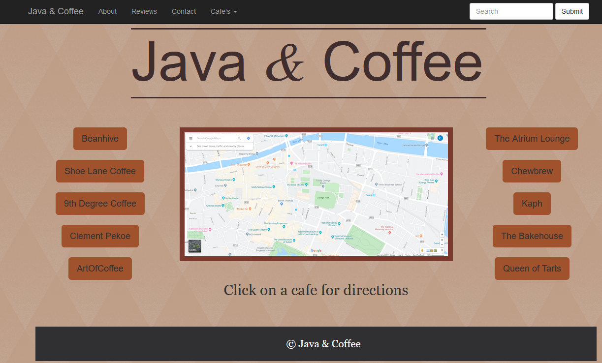

Code First Girls Web Dev Course
HTML, CSS, JavaScript

HTML, CSS, JavaScript
Last year I took part in an evening course ran by Code First Girls in order to learn more about Web Development. It was a 2 month course with meetings every Tuesday from 6.30pm to 8.30pm in Trinity College Dublin. We learned the fundamentals of how to create a website before delving into creating our own websites in groups. My group called themselves Java & Coffee, as our project would revolve around coffee places near Trinity.
 On the front page the user can click through all the cafes and it will show the user exactly where they are in relation to Trinity College. In the about us section you can learn about us-the creators, and in Reviews you
can read our mock-up reviews. As we only had 2 weeks to work on this while continuing on doing our course work it is quite of a basic site, but we were happy with it and ended up winning the course competition for the best website! The site is available to be seen here.
Throughout the 2 month course I have: